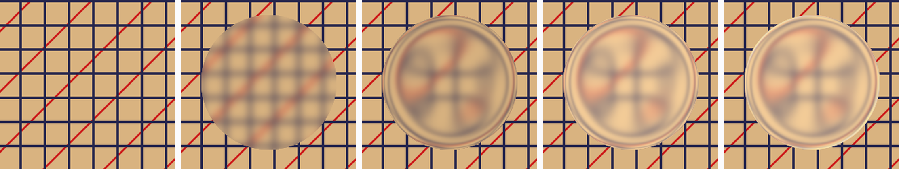
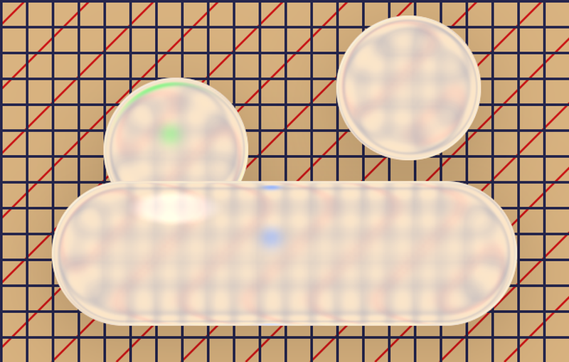
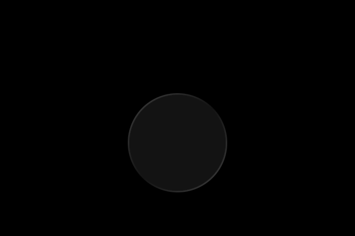
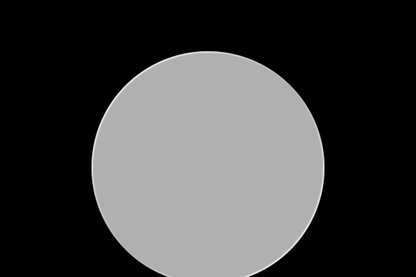
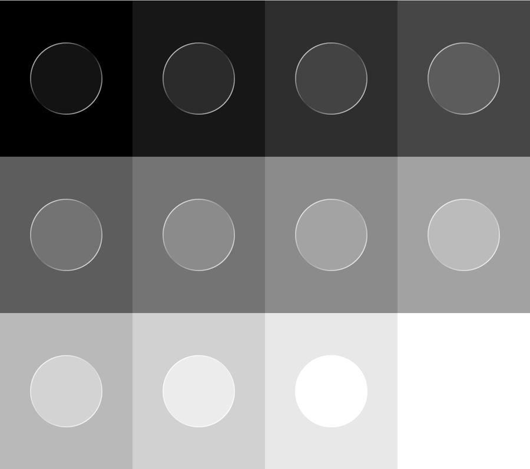
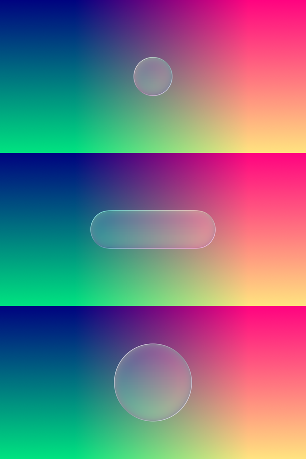
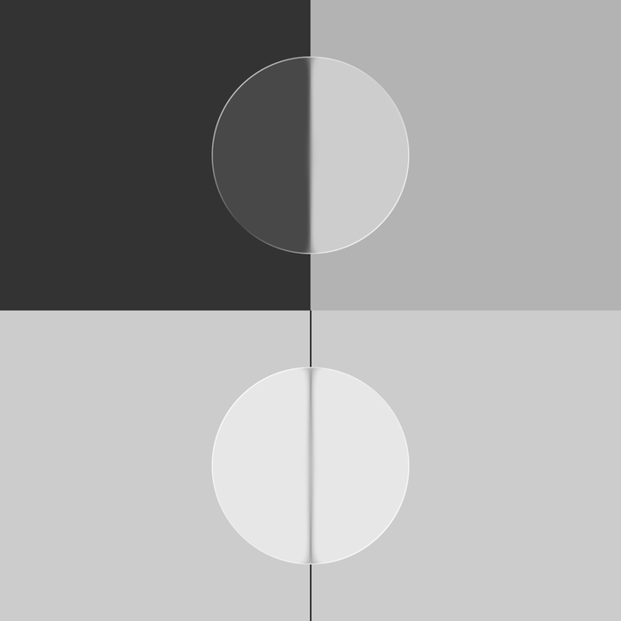

How Liquid Glass is built
Apple's iOS 26 glass is one small shader with five steps. Here is each step, what Apple does to keep it fast, and a Unity version that matches it within a few shades.

.glassEffect(.clear)
The recipeFive steps over what is behind

All five steps read one thing about the shape at every pixel: the signed distance to its outline (negative inside) and the direction to it, the normal. Apple keeps the shape as a distance field, so a circle, a capsule, a rounded rectangle or a whole group of buttons is the same input to the glass.
Step 1Blur, before anything bends
The backdrop is blurred first, with a plain Gaussian of σ 1.65 pt for .clear. The bend comes after it, so the squeezed edge shows a squeezed blur instead of thin, sharp copies of each line. The blur is half as strong right at the outline, which keeps the rim crisp.
Apple never runs a blur kernel per pixel. The backdrop is shrunk into a pyramid of mip levels once, and the glass reads one sample at a fractional level: lod = log2(radius). A blur of any size costs a single texture read.
Step 2Bend: a slab with a rounded edge
Picture the glass as a flat slab whose edge is rounded off by a quarter circle. Where the slab is flat, light goes straight through and you see what is right behind it. On the rounded edge the surface tilts, light bends inwards, and you see something further in. The closer to the outline, the stronger the tilt, so the image near the rim is pulled from deep inside the button. That is why straight lines curl near the edge, and why, right at the outline, the image flips: the outermost rays cross the ones next to them.
In the shader that is three lines. H is the width of the rounded edge, A how far in the very outline looks:
// 0 at the outline, 1 where it turns flat float t = saturate(-d / H); // the rounded edge's height there float height = sqrt(t * (2. - t)); // thinner glass looks further in uv += normal * (-A * (1. - height));
The edge has a fixed width in points: H = 20 pt and A = 60 pt on any shape of 56 pt or more, scaled down (0.36 S and S) on smaller ones. A 112 pt circle does not get a wider rim than a 56 pt one, only a larger flat middle.
Step 3Tone: one matrix
What the glass shows goes through one colour matrix. For .clear it is a small lift and gain, 0.075 + 1.04 × colour, with no change to saturation: blacks turn charcoal, everything else a touch brighter. Apple applies it to sRGB-encoded values, not linear light, and the blur averages encoded values too. In a Unity project set to Linear, the package encodes the frame before building its mips; otherwise thin dark lines blur into a lighter haze.
Step 4Light: a hairline from two lamps
The rim is a line about a point wide, lit by a key light from the top left and a fill light from the bottom right, and dark halfway between them. Its colour is a fixed matrix of what lies under it: near white over dark and grey backdrops, and over bright green its red and blue fall below zero, so the line disappears.
R' = 1.20·r − 1.00·g − 0.10·b + 0.9 G' = −0.30·r + 0.50·g − 0.10·b + 0.9 B' = −0.30·r − 1.00·g + 1.40·b + 0.9
Step 5.regular: frost, shadow, dark mode

.regular
matte = 1The frosted glass is the same shader with other numbers, plus two layers that .clear keeps off:
- More blur, scaled to the shape (σ ≈ 0.046 S) and a shallower edge (0.8 S deep, 0.25 S wide).
- A whiter tone,
0.696 + 0.293 × colour, with colour 2.3× as saturated so it still shows through the frost. - A shadow around the shape: the outline blurred by 17 pt and moved 8 pt down, multiplying whatever is under it.
- A dark mode for small glass. A shape under 66 pt turns dark when the backdrop under it is dark; larger ones never do.

.regular turns dark…
SpeedHow Apple keeps it cheap
- One read per pixel. The blur lives in a mip pyramid, built by small downsample passes, including a compute version for Apple's GPUs. The glass itself reads it once, at a fractional level. The whole glass shader, with its shadow and bleed branches, reads the texture at most 8 times.
- Distance fields, not geometry. Simple shapes get an exact formula: a supercircle, Apple's continuous-corner squircle. Other outlines are turned into a distance field once, by jump flooding, and reused every frame.
- Half precision. Every glass shader ships in two builds, with 16-bit and with 32-bit floats; half precision runs up to twice as fast on mobile GPUs.
- Specialised shaders. Core Animation's shader is one big “uber” shader with switches (function constants). Pipelines are compiled with the unused parts cut out, and the glass has its own variants, such as one without the bleed sample (
glass_background_no_bleed). - Only where needed. Pixels outside the shape and its shadow are discarded early.
This package does the same work in Unity's own terms: the finished frame is copied once, its mips are built by the GPU, and each glass shape is one quad drawn after everything else (below). It blurs with 32 taps around the bent point rather than one, which matches Apple's look more closely on a single mip chain.
In a real UIThe frame's last pass
Glass needs the finished picture under it, popups and scrolling lists included, in the same frame. So it is drawn after everything else:
Any shapeFrom a sprite
Since every step only needs a distance and a normal, any outline works: the package turns a sprite's alpha into a distance field once.

How we knowProbes and the shader itself
Each number above was measured twice. First with tiny SwiftUI probes in the iOS simulator, each built so that one step alone changes the picture: flat colours for the tone, colour ramps that encode position for the bend, an edge for the blur. Then by reading the glass out of the system: its shaders in QuartzCore.framework/default.metallib, and the filter's inputs in a running app's layer tree.



| Unity against Apple, 0–255 | Gamma | Linear |
|---|---|---|
.clear, the test board | 8.2 | 8.1 |
.clear, flat colours (worst) | 0.4 | 4 |
.regular, inside / shadow | 5.9 / 0.7 |
Use itTwo lines
// Package Manager → Install from git URL: https://github.com/frodiwe/UnityLiquidGlass.git // uGUI: add the Liquid Glass Button component. UI Toolkit: using UnityLiquidGlass; LiquidGlass.Toolkit(myButton); LiquidGlass.Settings.matte = 1; // Apple's .regular